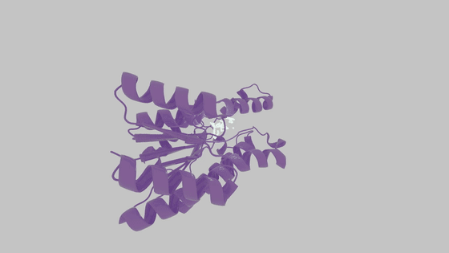

Overview¶
ML Conformer Generator¶
ML Conformer Generator (MLConfGen) is a tool for spatially-aware molecule generation with an Equivariant Diffusion Model (EDM) and a Graph Convolutional Network (GCN). It generates 3D molecular conformations that are both chemically valid and spatially similar to a reference shape.

Note: The reference shape is described by the principal components of the molecule's Moment of Inertia (MOI) tensor. Any 3D point cloud that can be reduced to this descriptor — a reference ligand, a fragment, or a pocket volume — can be used to steer generation.
Distributions¶
The project ships as two libraries that share the same trained weights:
| Library | Package | Backend | Scope |
|---|---|---|---|
| Python | mlconfgen on PyPI |
PyTorch or ONNX Runtime | Full pipeline: generation, fixed fragments, Inertial Fragment Matching, RL fine-tuning, ONNX export |
| JavaScript | mlconfgen on npm |
ONNX Runtime (Node or browser) | Generation, bond prediction, validity filtering, per-step animation |
Key Features¶
Shape-Guided Generation: Generate molecules that conform to a 3D reference - a molecular conformer or an arbitrary MOI context.
Fixed Fragments (Inpainting): Keep a substructure fixed and let the model complete the rest of the molecule in a geometrically consistent way, enabling scaffold hopping and fragment growing.
Inertial Fragment Matching (IFM): Generate molecules fragment-by-fragment using the additivity of the MOI tensor, improving both shape similarity and chemical validity.
Objective-Guided Generation: Steer the generator towards higher-scoring molecules with reinforcement learning and a custom scoring function (REINVENT4 compatible).
Torch-Free Inference: Run the exported ONNX models with onnxruntime in Python, or with onnxruntime-node / onnxruntime-web in JavaScript.
Lazy Weight Management: Weights are downloaded from Hugging Face on first use and cached locally; full and distilled model variants are supported transparently.
Citation¶
If you use MLConfGen in your work or research, please cite:
Denis Sapegin, Fedor Bakharev, Dmitry Krupenya, Azamat Gafurov, Konstantin Pildish, and Joseph C. Bear. Moment of inertia as a simple shape descriptor for diffusion-based shape-constrained molecular generation. Digital Discovery, 2025. DOI: 10.1039/D5DD00318K
Access & Licensing¶
- Source code: github.com/Membrizard/ml_conformer_generator — Apache 2.0
- Trained weights: huggingface.co/Membrizard/ml_conformer_generator — Apache 2.0
Note: The weights are not bundled with either package. They must be supplied as local files, or can be resolved from Hugging Face on first use. See Model Weights.
Support the Project¶
Support the Project¶
If you find MLConfGen useful, a simple way to support further open-source work is to pick up the indie game that ships it on-device:
- Trust Me, It Binds on Steam — a procedural deckbuilder built around MLConfGen molecule generation
More context: Commercial Projects.